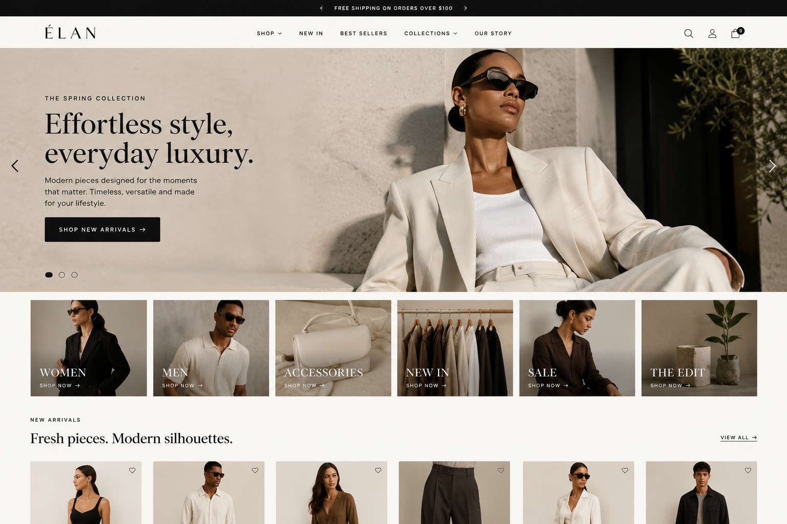

01 · Fashion DTC · Shopify UX/UI
ELAN — effortless style, clearer shopping.

The experience
The homepage combines an editorial hero with direct shopping actions, curated category tiles and a new-arrivals product grid. The goal is to balance brand storytelling with fast access to products.
UX decisions
Clear navigation, visible shopping categories, strong CTA placement and consistent product-card patterns reduce cognitive load while preserving the premium visual language.